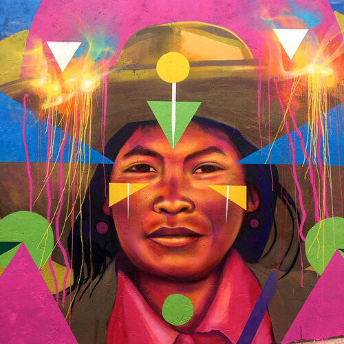
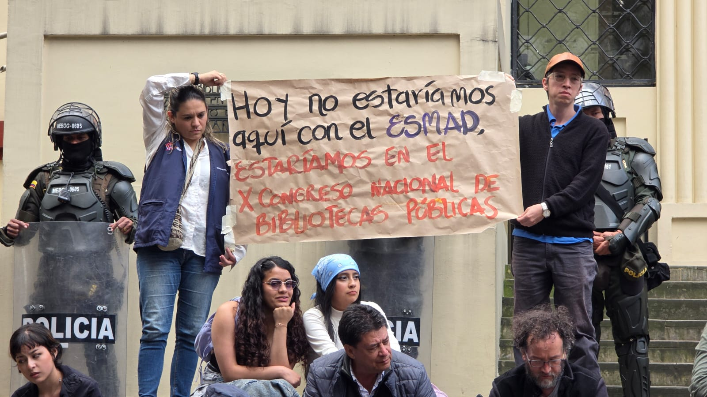
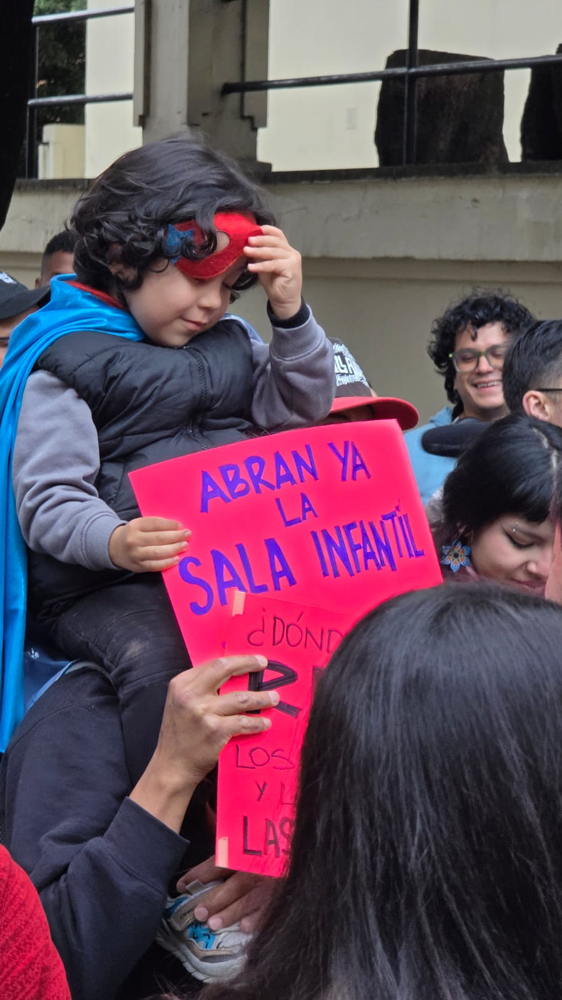
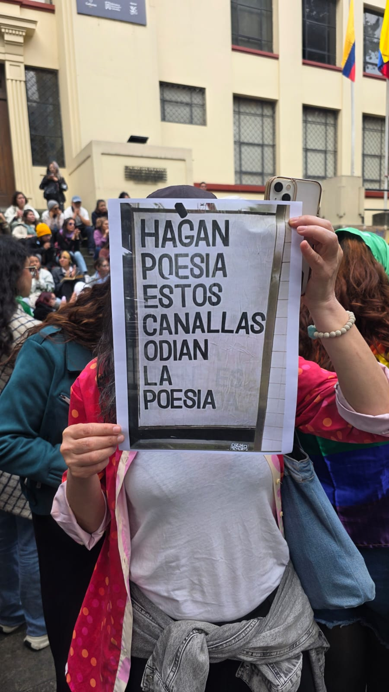
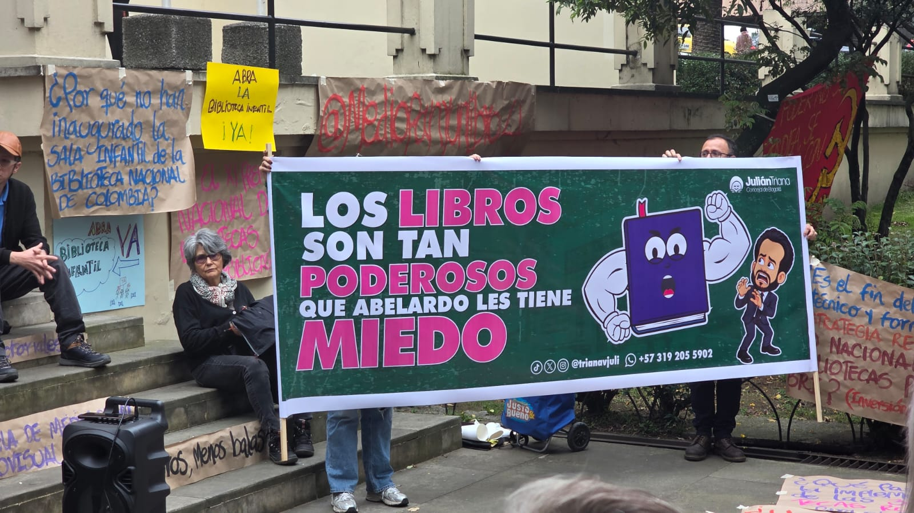
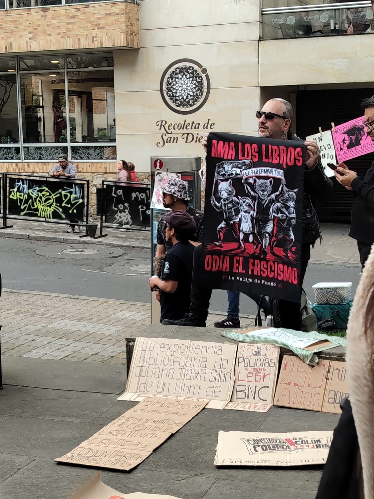
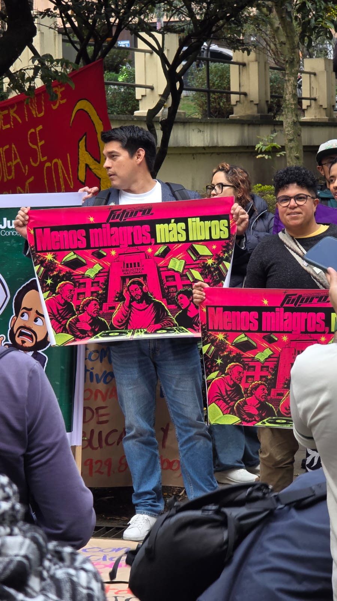
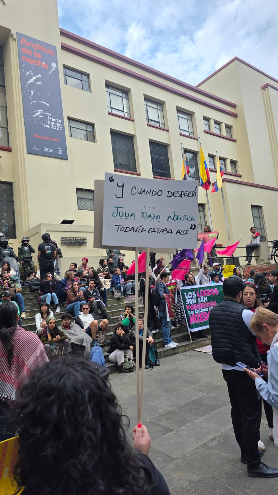
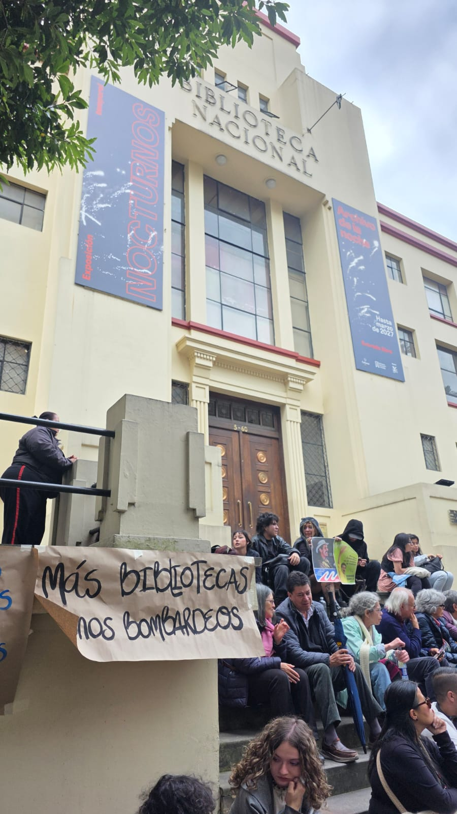

01 / 02
La Concordia
- Autoría
- Guache
- Fecha
- 2018
- Tipo
- Mural
- Lugar
- La Concordia
- Temas
- Resistencia
- Mirada
- La creativa
- Impacto
- Disfrutable
- Reacción
- Genera tranquilidad
«Que si un pueblo su dura cadena
no se atreve a romper con sus manos,
bien le es fácil mudar de tiranos,
pero nunca ser libre podrá».
— José María Heredia, La estrella de Cuba (1823)
¿De cuántas maneras puede una ciudad expresar que no está dispuesta a olvidar quién es?
A veces la resistencia se manifiesta en las calles, en las paredes que se convierten en lienzos, en las historias que pasan de una generación a otra o en las expresiones culturales que mantienen vivas las raíces de un territorio. No siempre aparece en grandes acontecimientos; también está presente en los pequeños gestos con los que las personas defienden su identidad, hacen memoria y reclaman un lugar en la ciudad.
Bogotá puede parecer una ciudad fría, acelerada y, en ocasiones, hostil. Sin embargo, entre sus calles y espacios cotidianos surgen distintas formas de apropiación y expresión que transforman la manera de habitarla. El arte urbano, los relatos y las manifestaciones culturales permiten que otras voces ocupen el espacio público y que historias que podrían quedar en el olvido encuentren una manera de permanecer.
He escogido estas obras porque quiero acercarte a una Bogotá que se expresa, que recuerda y que encuentra en la creación una forma de hacerse visible. A través de ellas podremos reconocer las identidades que habitan sus barrios, acercarnos a sus raíces y descubrir cómo el arte puede convertir un lugar de paso en un espacio de encuentro y memoria.
Recorrer esta colección también es reconocer que la ciudad no se construye únicamente a partir de sus edificios, sus calles o sus transformaciones urbanísticas. La construyen las personas que la habitan, las historias que comparten y las expresiones con las que se niegan a desaparecer.
Te invito a mirar estas obras con curiosidad, a detenerte en sus formas y sus historias y a descubrir qué hay detrás de cada expresión. Porque resistir también puede ser una manera de crear, recordar y seguir perteneciendo.
¿Qué formas de resistencia podemos encontrar en una ciudad que nunca deja de transformarse?
Recorrer las obras ↓COLECCIÓN 05 / 07
Las formas de crear, recordar y permanecer.

01 / 02
¿Puede un muro contar la historia de un barrio?
En La Concordia, el artista urbano Guache lleva al espacio público el retrato de una persona del sector, realizado a partir de una fotografía de Lucas Rodríguez. El rostro ocupa el centro de la composición y se integra con formas geométricas, líneas y colores intensos que se extienden por la pared. La imagen no aparece aislada: se mezcla con el entorno y establece un diálogo visual con el lugar en el que se encuentra.
El mural convierte las calles de La Concordia en un espacio de encuentro entre arte, identidad y memoria. Al tomar como punto de partida el retrato de alguien vinculado con el sector, la obra desplaza la mirada hacia las personas que construyen la vida del barrio y que, muchas veces, permanecen fuera de los relatos oficiales de la ciudad. La pared deja de ser únicamente una superficie y se transforma en un soporte para reconocer a quienes habitan ese territorio.
En una ciudad que cambia constantemente, estas intervenciones también son una forma de apropiación del espacio público. La obra permanece a la vista de quienes transitan por el barrio, invita a detenerse y recuerda que la identidad de un lugar no está hecha solamente de sus edificios o de su historia arquitectónica, sino también de las personas, los vínculos y las memorias que lo mantienen vivo.
La resistencia no se encuentra únicamente en los murales o en las manifestaciones artísticas. También está en las discusiones que atraviesan nuestra sociedad, en las decisiones que afectan los espacios públicos y en las voces que se organizan para defender aquello que consideran importante.
Reunimos aquí algunas noticias recientes sobre cultura, memoria, lectura y libertad de expresión. No se trata de cerrar las discusiones, sino de acercarnos a los hechos, conocer distintas perspectivas y preguntarnos qué está en juego cuando se transforma o se limita el acceso a la cultura.
Bogotá · 5 de noviembre de 2026
Un juzgado ordenó reintegrar las piezas retiradas de las salas del Museo Nacional. La Defensa Jurídica del Estado impugnó el fallo y el debate mantiene abiertas preguntas sobre la memoria histórica, la libertad de expresión y los criterios curatoriales que deben orientar las exposiciones públicas.
Leer noticia en El Espectador ↗Bogotá · 22 de octubre de 2026
Bibliotecarios, escritores y trabajadores del sector cultural se reunieron frente a la Biblioteca Nacional para expresar su preocupación por el presupuesto, los programas de lectura y el fortalecimiento de las bibliotecas públicas. La movilización puso en el centro la defensa de los espacios culturales como bienes colectivos.
Leer noticia en Caracol Radio ↗Fráncfort · 9 de octubre de 2026
La propuesta inicial para el estand de Colombia en la Feria del Libro de Fráncfort fue reemplazada por una imagen asociada al lema del Gobierno. El cambio generó críticas de voces del sector editorial sobre la autonomía cultural y la manera en que se representa al país en un escenario internacional.
Leer investigación en CAMBIO ↗Defender una biblioteca también es defender el derecho de encontrarnos, leer, aprender y participar de la vida cultural de nuestra ciudad.








El compromiso ahora es habitar los espacios de la Biblioteca Nacional, apropiarnos de ellos y no permitir que nos los arrebaten. No podemos permanecer indiferentes mientras aquello que pertenece a todos se ve amenazado por decisiones que pueden debilitarlo, desfinanciarlo o despojarlo de las condiciones necesarias para seguir existiendo. Una biblioteca pública no es un privilegio ni un espacio reservado para unos cuantos: es del pueblo y para el pueblo.
Estar allí fue encontrarse con muchas voces reunidas alrededor de una preocupación común. Entre pancartas, consignas, libros y poemas, la Biblioteca Nacional dejó de ser únicamente el edificio que tantas veces vemos al pasar y se convirtió en un espacio de encuentro, de expresión y de defensa de lo público. Las palabras aparecieron en carteles, las lecturas se abrieron paso entre las voces y cada persona encontró una manera de manifestar por qué estos espacios importan.
Había mensajes que invitaban a leer, otros que reclamaban la apertura de la sala infantil y algunos que recordaban el lugar que tienen los libros en una sociedad que necesita preguntarse, cuestionar y pensar por sí misma. También estaba presente la tensión de una movilización acompañada por la fuerza pública. Pero, entre todas esas imágenes, me quedo con la voluntad de quienes decidieron estar allí y hacer escuchar sus voces.
El compromiso no puede terminar cuando se recoge la última pancarta. Si nos gusta leer, lleguemos a la biblioteca. Si todavía no hemos encontrado un libro que nos atrape, démosle una oportunidad. Visitemos sus salas, participemos de sus actividades y recordemos que una institución pública también se mantiene viva gracias a las personas que la habitan.
No es tiempo de ser ajenos a lo que está pasando en nuestro país. Defender la cultura, la lectura y el acceso al conocimiento también es una forma de participar en la construcción de la sociedad que queremos. Leamos, leamos mucho. Y, sobre todo, no dejemos de defender aquello que nos pertenece colectivamente.
Porque una biblioteca no se defiende solamente cuando está en peligro: también se defiende entrando en ella, llenándola de lectores y haciendo que siga siendo un lugar para todos.
Jornada de movilización frente a la Biblioteca Nacional de Colombia · Bogotá, octubre de 2026 · Fotografías de archivo personal.
Hay momentos en los que guardar silencio deja de ser una opción. Sin Miedo, de LosPetitFellas, nos recuerda la importancia de no permitir que el miedo nos paralice, de reconocer aquello que nos incomoda y de encontrar el valor para expresarnos.
Con una energía que transita entre la inconformidad y la fuerza colectiva, esta canción acompaña el espíritu de la colección: resistir también significa levantarse, hacer escuchar la propia voz y no renunciar a aquello en lo que creemos.
Sin Miedo · LosPetitFellas · Video subtitulado.
Escuchar «Sin Miedo» ↗La resistencia también está en los lugares que defendemos, en las expresiones que nos representan y en las historias que nos negamos a dejar desaparecer. Queremos conocer esos espacios, murales, intervenciones y manifestaciones culturales que para ti tienen un significado especial.
Cuéntanos qué expresión de resistencia te gustaría compartir, dónde se encuentra y qué historia o mensaje reconoces en ella. Tu aporte puede ayudarnos a ampliar este archivo y a descubrir otras maneras de mirar la ciudad.
La participación es voluntaria. No necesitas compartir información personal.
Compartir mi mirada ↗